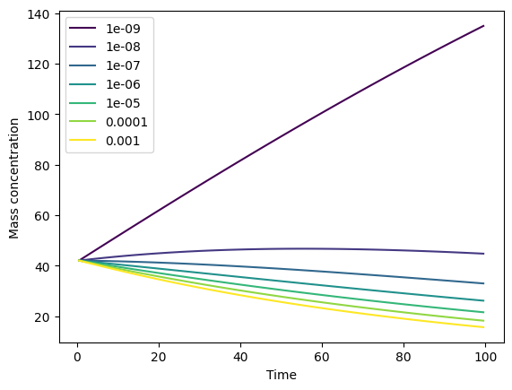
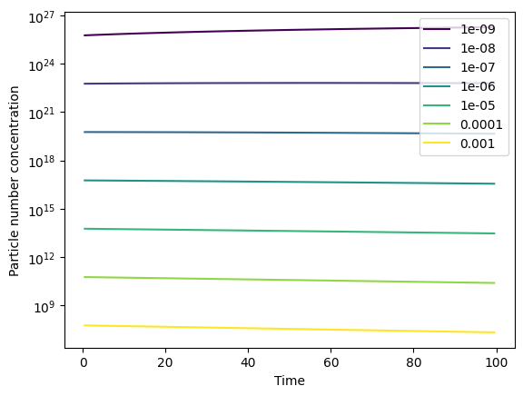
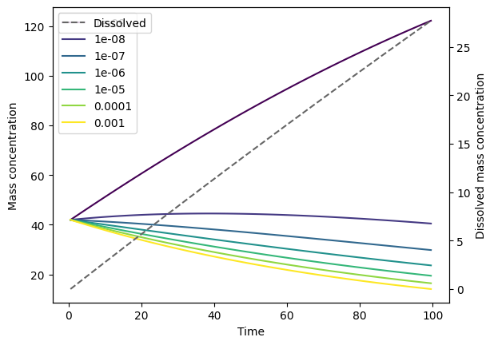

Example usage#
Running the FRAGMENT-MNP model is a two-step process. First, the model must be initialised by passing it config and input data. Example config and data is given in the fragmentmnp.examples module, which is used here. Then the fragmentmnp.FragmentMNP.run() method runs the model and returns a FMNPOutput object with the output data.
from fragmentmnp import FragmentMNP
from fragmentmnp.examples import minimal_config, minimal_data
import matplotlib.pyplot as plt
import numpy as np
# Create the model and pass it config and data. minimal_config and
# minimal_data are an examples of a dicts with only required values.
# full_{config|data} are examples of a dicts with all values given
fmnp = FragmentMNP(minimal_config, minimal_data)
# Run the model
output = fmnp.run()
The returned FMNPOutput object contains a timeseries t, particle mass and number concentrations for each size class, c and n, total concentration of dissolved organics c_diss and concentration of mineralised polymer c_min. See the FMNPOutput API reference for more details. A convenient plotting function can be used to quickly plot model output (see Plotting):
# Plot the time evolution of mass concentrations
_ = output.plot()

Note
If you are running the model via a script, rather than an interactive environment (e.g. Jupyter), you can pass show=True to the plot function in order to automatically display the plot, i.e. output.plot(show=True). show is False by default so as not to inhibit users from building more complex plots by returning fig, ax and using these.
We can also plot the particle number concentrations n. Note the logged y-axis:
_ = output.plot(type='particle_number_conc', log_yaxis=True)

Dissolution#
The example data has a dissolution rate k_diss of 0. Let’s simulate dissolution by setting this to a constant value of 0.001. For more k_diss (and k_frag and k_min) values that are more complex dependencies on time and surface area, see Fragmentation, dissolution and mineralisation rates.
from fragmentmnp import FragmentMNP
from fragmentmnp.examples import minimal_config, minimal_data
# Change the dissolution parameters
minimal_data['k_diss'] = 0.001
# Rerun the model
fmnp = FragmentMNP(minimal_config, minimal_data)
output = fmnp.run()
We can use the FMNPOutput.plot() method again to plot the time evolution graph with dissolution mass concentrations:
# Plot the model outputs with dissolution included
_ = output.plot(plot_dissolution=True)

If we were interested in mineralisation (see Dissolution and mineralisation) then we can plot this be specifying plot_mineralisation=True.